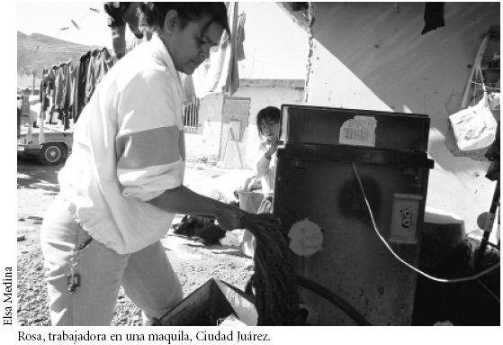

1 La Industria Maquiladora en Ciudad Juárez
1.1 Evolución de la Industria
1.1.1 Contexto Histórico
Ciudad Juárez, antes de que la maquila se convirtiera en la estrella del show, era un lugar donde la gente se rifaba la vida con lo que podía. En los cuarentas, la ciudad empezó a crecer a lo loco gracias al turismo, el comercio en la frontera y la migración. Era la época donde se levantaron fábricas chiquitas, de esas que hacían de todo, desde jabón hasta destilar whiskey [1]. Pero luego vino la Segunda Guerra Mundial y todo se sacudió. Los gringos empezaron a pedir mano de obra como si no hubiera un mañana, y un chorro de raza se fue para el otro lado, dejando aquí las fábricas medio vacías [1].
Mientras tanto, Fort Bliss se llenó de soldados que, cuando no estaban en el cuartel, se venían para Juárez a tirar relajo. Eso levantó un chorro el turismo y los servicios, y de paso, empezó a cambiar la economía de la ciudad [1]. Fue en ese tiempo que Juárez empezó a transformarse en lo que es ahora, una ciudad que, aunque siempre ha sido fronteriza, empezaba a ver cómo el dinero entraba por otras vías, no solo por la agricultura.
1.1.2 El Programa Bracero y sus Consecuencias
Para cuando llegó el 42, Estados Unidos lanzó el Programa Bracero porque necesitaba manos que le echaran al jale en los campos. Y pues Juárez, por estar cerquita, se convirtió en un punto clave. La raza se iba en bola para trabajar allá, y eso trajo mucha lana a la ciudad [1]. Pero la cosa se puso fea cuando en los sesentas la agricultura empezó a dar bajón, y los braceros que regresaban se encontraban con que ya no había mucho que hacer acá. La ciudad se llenó de desempleados, y el panorama no pintaba nada bien [1].
Ya para el 65, cuando se acabó el Programa Bracero, la cosa estaba color de hormiga. La industria que quedaba no daba para tanto, y la ciudad estaba llena de gente que no sabía para dónde jalar. Fue entonces cuando el gobierno federal le entró al quite con el PRONAF y el Programa de Industrialización Fronteriza (PIF) [1]. La idea era darle un levantón a la economía de la frontera, y Juárez, con su ubicación chida, fue uno de los lugares donde estos programas pegaron más fuerte.
1.1.3 Nacimiento y Consolidación de la Industria Maquiladora
El verdadero trancazo vino con el PIF en 1965. Ahí fue cuando Juárez empezó a ser lo que es hoy. Gracias a ese programa, un montón de empresas gringas comenzaron a instalar sus plantas de ensamblaje aquí, aprovechando la mano de obra barata y la cercanía con el mercado estadounidense [2]. La cosa era simple: los gringos ponían la tecnología, y los juarenses ponían las manos. Así nació lo que se conoció como “plantas gemelas” [3].
Juárez se convirtió en un imán para estas empresas. Para finales de los sesentas, México ya se codeaba con los grandes en la industria maquiladora, solo detrás de Alemania y Canadá [4]. Empresas como RCA, Coilcraft, y Acapulco Fashion pusieron sus ojos en la ciudad, y así Juárez se convirtió en un mero centro de maquilas [5]. El billete empezó a correr y con él, la ciudad comenzó a cambiar de cara.

1.1.4 Crecimiento Descontrolado y Desafíos Urbanos
Ya en los setentas, la maquila era la que rifaba en Juárez. Empleaba a un chorro de gente, sobre todo a las morras, que eran las que más jale encontraban en las fábricas de textiles y electrónica [6]. Pero como todo en la vida, no todo era miel sobre hojuelas. El crecimiento fue tan rápido que la ciudad no estaba preparada para tanta gente. Juárez creció como mancha de aceite, con colonias que brotaban por todos lados, muchas sin agua, drenaje ni pavimento [7].
Las maquilas se instalaban donde les daba la gana, y eso hizo que el crecimiento urbano fuera un desmadre [1]. La falta de planificación hizo que muchas colonias se quedaran sin servicios básicos, y la ciudad, en lugar de crecer con orden, lo hizo a lo loco. Aun así, la maquila seguía siendo la que mandaba, y la raza, a pesar de las broncas, no dejaba de jalar porque, como dicen por aquí, la chamba es la chamba.
1.1.5 Crisis y Resiliencia
Pero no todo fue éxito. En 1974, Juárez se enfrentó a su primera gran crisis en la maquila cuando la empresa Transformer de México cerró, dejando a 300 trabajadores en la calle [8]. La recesión en Estados Unidos pegó duro, y varias maquilas que dependían del mercado gringo se vieron en la necesidad de bajar cortinas [8]. La crisis se volvió a sentir en 1980, cuando varias fábricas tuvieron que reducir operaciones o cerrar temporalmente por falta de materia prima y sobreproducción [9].
A pesar de estos golpes, la maquila en Juárez demostró que estaba hecha de otra madera. En 1983, ya andaba operando al 85% de su capacidad, y para 1984, se esperaba que la cosa mejorara aún más con la llegada de nuevas empresas [10][11]. Fue durante los ochentas cuando Juárez empezó a atraer a empresas de alta tecnología, marcando una nueva etapa en la historia de la maquila en la ciudad [11]. La resiliencia de Juárez frente a las crisis mostró que, aunque las cosas se pusieran difíciles, la ciudad siempre encontraba la manera de salir adelante.
1.1.6 Evolución Reciente y Desafíos Modernos
En los últimos años, la industria maquiladora en Ciudad Juárez ha seguido siendo un motor económico crucial. Sin embargo, ha tenido que adaptarse a nuevos desafíos, como la digitalización, la automatización y los cambios en las cadenas de suministro globales. El impacto de la pandemia de COVID-19 también obligó a las maquilas a reinventar sus procesos para mantener la producción en marcha, implementando nuevas tecnologías y protocolos de seguridad [12].
El informe de la Secretaría de Economía de 2022 destaca cómo la industria maquiladora ha empezado a integrar tecnologías como la inteligencia artificial y el Internet de las Cosas (IoT) para optimizar la producción y reducir costos [13]. Esto ha llevado a una transformación en la forma en que operan las maquilas, con un enfoque cada vez mayor en la innovación y la sostenibilidad.
1.1.7 Referencias
- Oscar Martínez, Ciudad Juárez: El auge de una ciudad fronteriza a partir de 1848, FCE, México, 1982.
- “La Frontera norte, diagnóstico y perspectivas”, Dirección General de Estadística, S.I.C. s/f, mimeo.
- Thomas Madison, Reseña anual de la industria maquiladora, SUGUMEX, México, 1990.
- Bass Zavala, Sonia. “El crecimiento urbano en Ciudad Juárez, 1950-2000. Un acercamiento socio-histórico a la evolución desordenada de una ciudad de la frontera norte.” Chihuahua Hoy (2013): 247-289.
- “La Frontera norte, diagnóstico y perspectivas”, Dirección General de Estadística, S.I.C. s/f, mimeo.
- Diario de Juárez, 21 a 24 de agosto de 1981.
- El Fronterizo, 25 de agosto de 1974.
- Guadalupe Ramos, Norte, 9 de febrero de 1994, p. 4A.
- Diario de Juárez, 22 de mayo de 1991.
- Diario de Juárez, 7 de febrero de 1991.
- Declaración de José Manuel Luna, promotor de AMACH, Novedades, 20 de enero de 1985.
- Vega, Luis. “La transformación de la industria maquiladora en la era digital.” El Financiero, 2023.
- Secretaría de Economía. “Informe Anual sobre la Industria Maquiladora”. Gobierno de México, 2022.